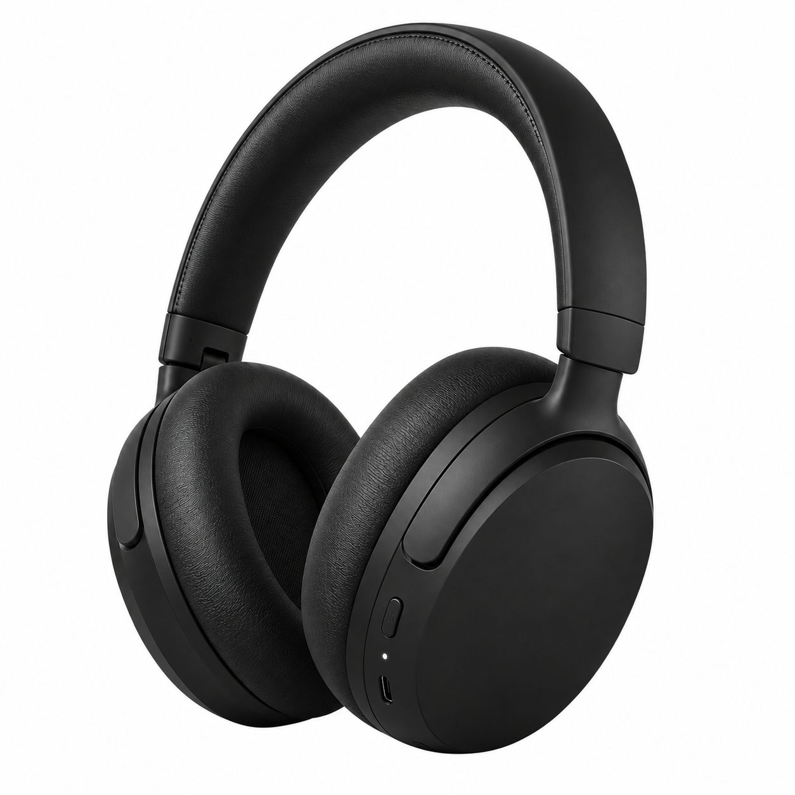
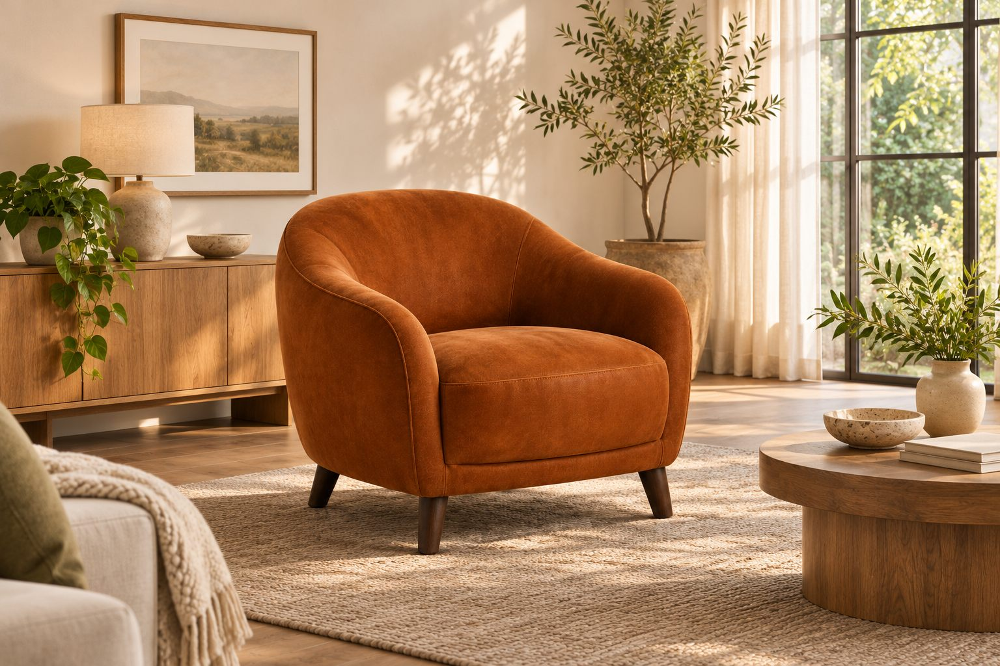

Grafika produktowa
Galerie produktów, infografiki, aranżacje, materiały promocyjne i spójna komunikacja wizualna.
Projektuję grafiki produktowe, galerie Allegro, katalogi i materiały reklamowe. Łączę kreatywne projektowanie z 9-letnim doświadczeniem w e-commerce i praktyczną znajomością marketplace.

PURE SOUND / GALERIA PRODUKTU
FORM / WNĘTRZAPrzykładowe projekty koncepcyjne pokazujące sposób prezentacji produktów i projektowania materiałów dla e-commerce.
* Prezentowane prace są projektami koncepcyjnymi przygotowanymi na potrzeby portfolio. Nie są realizacjami dla wymienionych marek ani rzeczywistymi ofertami sprzedaży.
Galerie produktów, infografiki, aranżacje, materiały promocyjne i spójna komunikacja wizualna.
Praktyczna znajomość tworzenia ofert, zarządzania kontami Allegro, analizy konkurencji i Allegro Ads.
Projektowanie stron katalogowych, układów produktowych, typografii i czytelnych prezentacji asortymentu.
Wykorzystanie narzędzi AI do opracowywania koncepcji, wizualizacji i usprawniania pracy kreatywnej.
Jestem Marcin Żurawicki. Łączę projektowanie graficzne z 9-letnim doświadczeniem w e-commerce. Znam specyfikę sprzedaży internetowej i wiem, jak ważne są czytelna prezentacja produktu, konsekwentny przekaz i jakość materiałów wizualnych.
Moje doświadczenie obejmuje samodzielną obsługę kont Allegro, tworzenie ofert, analizę konkurencji oraz prowadzenie kampanii Allegro Ads. W portfolio prezentuję nowe projekty koncepcyjne, które pokazują moje podejście do grafiki sprzedażowej.
Jestem otwarty na możliwości zawodowe w obszarze grafiki e-commerce, contentu produktowego i marketplace.